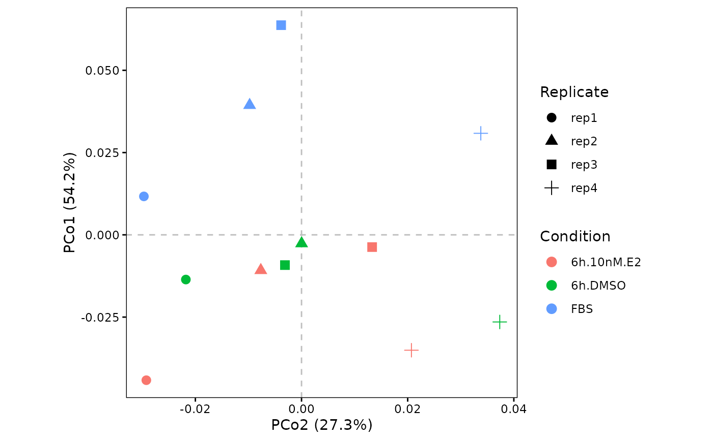
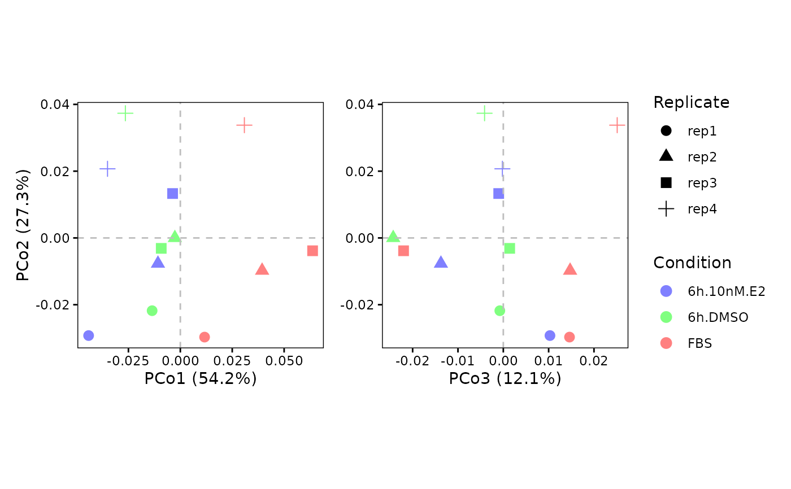
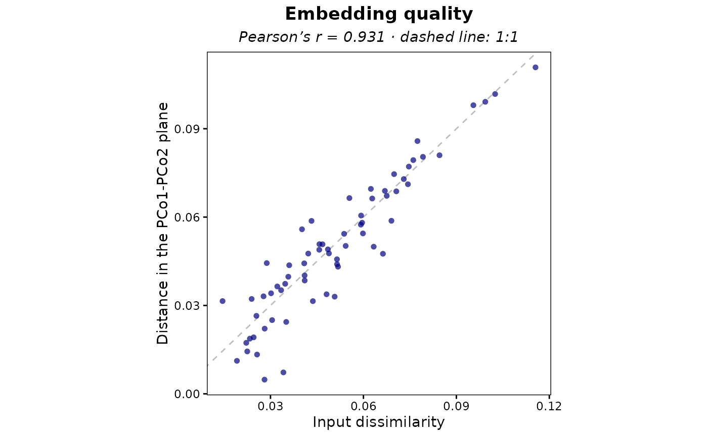

This function performs a Principal Coordinate Analysis (PCoA, also known as classical
Multi-Dimensional Scaling) starting from the sample dissimilarities computed by plot.correlation.heatmap.
Differently from perform.PCA, which always works on euclidean distances between samples, PCoA allows the use of
correlation-based dissimilarities (1 - correlation), which are frequently more robust for LFQ intensities
since they emphasize the co-variation profile of the samples rather than the absolute intensity magnitude.
perform.PCoA(
DEprot.correlation.object,
DEprot.object = NULL,
n.axes = NULL,
correlation.method = NULL,
distance.transformation = "none",
correction = "none",
PCo.x = 2,
PCo.y = 1,
color.column = "column.id",
shape.column = NULL,
label.column = NULL,
dot.colors = NULL,
bar.color = "steelblue",
line.color = "navyblue",
verbose = TRUE
)Arguments
- DEprot.correlation.object
An object of class
DEprot.correlation, as generated by plot.correlation.heatmap.- DEprot.object
Optional object of class
DEprotorDEprot.analysesused to compute the protein-vs-axis projections (axis.loadings). It must be the same object used to generate theDEprot.correlation.object. Default:NULL(no protein projection computed).- n.axes
Integer indicating the number of principal coordinates to compute. It cannot exceed
n_samples - 1. Default:NULL(all the computable axes,n_samples - 1).- correlation.method
String indicating the correlation method that was used to generate the
DEprot.correlationobject ('pearson', 'spearman', 'kendall'). WhenNULLthe value is read from themethodslot of theDEprot.correlationobject; for objects generated before that slot existed, the method is recovered from the heatmap title and falls back to"unknown". Default:NULL.- distance.transformation
String indicating the transformation to apply to the
1 - correlationdissimilarities. One among: 'none' (dissimilarities used as they are stored in theDEprot.correlationobject), 'sqrt' (sqrt(1 - correlation), which is a proper metric and is euclidean-embeddable, hence it removes negative eigenvalues). Default:"none".- correction
String indicating the correction to apply when the dissimilarities are not euclidean-embeddable (negative eigenvalues). One among: 'none', 'cailliez' (additive constant correction, implemented by
stats::cmdscale(add = TRUE)), 'lingoes' (sqrt(d^2 + 2c), withcthe absolute value of the most negative eigenvalue). Default:"none".- PCo.x
Number indicating which Principal Coordinate (PCo) to display on the x-axis of the stored scatter plot. Default:
2(PCo2).- PCo.y
Number indicating which Principal Coordinate (PCo) to display on the y-axis of the stored scatter plot. Default:
1(PCo1).- color.column
String indicating the name of the column in the
metadatato use as factor for the dot colors of the stored plots. Default:"column.id"(each sample a color).- shape.column
String indicating the name of the column in the
metadatato use as factor for the dot shapes of the stored plots. Default:NULL(all dots).- label.column
String indicating the name of the column in the
metadatato use as label of the dots of the stored plots. Default:NULL(no labeling).- dot.colors
Color-vector indicating the colors to use for the points of the stored combined scatter (
scatter.plot.123). Default:NULL(automatic colors).- bar.color
String indicating the color to use for the bar fill of the cumulative plot. Default:
"steelblue".- line.color
String indicating the color to use for the line and dots of the cumulative curve. Default:
"navyblue".- verbose
Logical value indicating whether messages regarding the euclidean-embeddability of the dissimilarities should be printed. Default:
TRUE.
Value
A DEprot.PCoA object.
Details
The dissimilarities are rebuilt from the corr.matrix slot of the DEprot.correlation object, so that
the requested distance.transformation is always applied consistently; the untransformed dist object
originally stored by plot.correlation.heatmap is kept in the distance.input slot for reference.
Negative eigenvalues. 1 - correlation is a valid dissimilarity but not a metric (it does not satisfy
the triangle inequality), therefore the resulting eigenvalues can be negative, meaning that the dissimilarities
cannot be perfectly embedded in a euclidean space. The function always reports the number and the magnitude of the
negative eigenvalues in the euclidean.diagnostics slot, and the proportions of variance are computed using
only the positive eigenvalues as denominator, which avoids the nonsensical percentages returned by a naive
eig/sum(eig). If the negative eigenvalues are large, use distance.transformation = "sqrt"
(recommended, since sqrt(1 - r) is a metric and its double, sqrt(2(1 - r)), is exactly the euclidean
distance between standardized profiles) or one of the correction methods.
Axis selection. The importance table includes the broken-stick expectation: axes whose proportion of
variance exceeds the corresponding broken-stick value are usually considered non-trivial.
Note on protein loadings. PCoA works on the sample-by-sample dissimilarity matrix and therefore, differently
from a PCA, it has no native protein loadings. When a DEprot.object is provided, the projections stored in
axis.loadings are computed a posteriori as the correlation between each protein profile and each principal
coordinate; they are an interpretative aid and must not be read as PCA rotations.
See also
Examples
# Compute the sample correlations
correlation <- plot.correlation.heatmap(DEprot.object = DEprot::test.toolbox$dpo.imp,
correlation.method = "spearman")
# Perform the Principal Coordinate Analyses (PCoA)
pcoa <- perform.PCoA(DEprot.correlation.object = correlation,
color.column = "condition",
shape.column = "replicate")
#> Only 8 of the 11 principal coordinates requested correspond to a positive eigenvalue and could be computed.
#> The dissimilarities are not euclidean-embeddable: 3 negative eigenvalue(s) detected (largest relative magnitude = 0.081).
#> The negative eigenvalues are non-negligible. Consider using 'distance.transformation = "sqrt"' or 'correction = "cailliez"'/'correction = "lingoes"'.
#> The proportions of variance are computed using only the positive eigenvalues as denominator.
# Show the stored plots
pcoa@scatter.plot

pcoa@scatter.plot.123

pcoa@cumulative.PCo.plot
 pcoa@shepard.plot
pcoa@shepard.plot

# Same, but forcing euclidean-embeddable dissimilarities
pcoa.sqrt <- perform.PCoA(DEprot.correlation.object = correlation,
distance.transformation = "sqrt",
color.column = "condition")